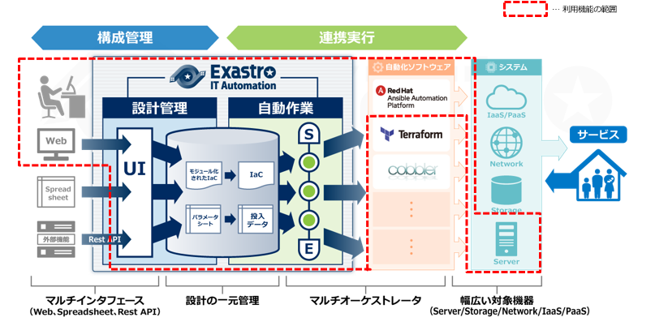
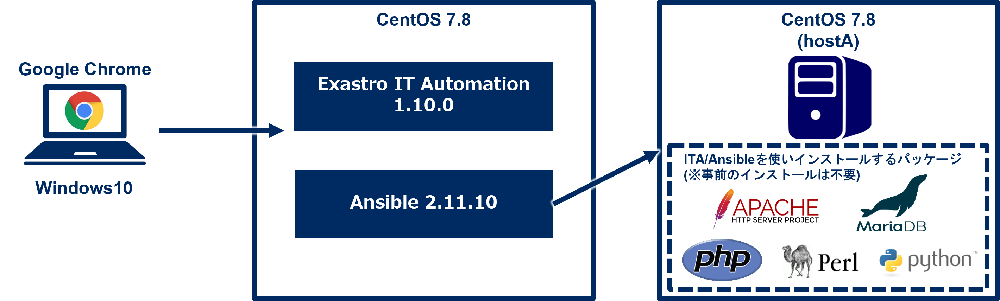

1. クイックスタート¶
1.1. はじめに¶
{kind=link}
1.1.1. 本クイックスタートで体感できる主なITA機能の範囲¶
自動化ソフトウェア(Ansible)との連携
パラメータ管理(メニュー作成・登録・履歴管理等)
変数紐付け(代入値自動登録)

{kind=link}
1.1.2. 本シナリオと作業範囲の位置づけ¶
作業環境
 使用するシステム
Exastro IT Automation 1.10.0
CentOS Linux 7.8(ITAサーバ用)
CentOS Linux 7.8(ターゲットマシン用)
Windows 10(クライアント)
Google Chrome (Win10側)
{kind=link}
シナリオ実行イメージ¶
{kind=link}
インストール後からAnsible-Legacyを実行するまでのシナリオ¶
{kind=link}
1.1.3. 各種用語の説明¶
用語 |
説明 |
|---|---|
Playbook |
定型業務をタスクで記述し、Ansibleに実行させるためのファイルです。
YAML形式で使用します。
|
Ansible-Legacy |
ITA から Ansible を利用する機能です。
Legacy コンソールでは、構築コードとして単体のYAMLファイルを使う場合に使用します。
|
オペレーション名(operation) |
ITA での作業実行単位です。
作業予定、実行履歴などを管理することができます。
|
Conductor |
ITA での一連の作業の単位です。
オペレーション名と関連付けて実行します。
Node と呼ぶ各種パーツを組み合わせて、ジョブフローを作成し、
複数の機器に対して、一連の構築・設定などの作業を行います。
|
Movement |
各機器に対する構築ツールを使った構築、設定などの作業の単位です。
|
1.2. 画面説明¶
1.2.1. Webコンソール画面(ログイン)¶
{kind=link}
1.2.2. 画面説明(メインメニュー)¶
{kind=link}
{kind=link}
{kind=link}
1.3. 実行前準備¶
1.3.1. Playbookをアップロードしてジョブ(Movement)に紐付け¶
Playbookの準備¶
yum_package_install.yml
- name: install the latest version of packages yum: name: "{{ item }}" state: latest with_items: - "{{ VAR_packages }}
警告
Movement一覧へ新規Movementを登録¶
メインメニューより、「Ansible-Legacy」メニューグループ >>「Movement一覧」メニューをクリックします。
「登録開始」ボタンをクリックします。
各項目へ下表のように入力し、登録をクリックしてください。
{kind=link}
Movement名 |
ホスト指定形式 |
オプションパラメータ |
|---|---|---|
パッケージインストール |
IP |
-vvv |
「Playbook素材集」へ新規Playbookを登録¶
「Ansible-Legacy」メニューグループ >>「Playbook素材集」メニューをクリックします。
登録開始をクリックし、各項目へ下表のように入力し登録をクリックしてください。
{kind=link}
Playbook素材名 |
Playbook素材 |
|---|---|
yum_package_install |
yum_package_install.yml |
「Movement-Playbook紐付」への登録¶
「Ansible-Legacy」メニューグループ >>「Movement-Playbook紐付」メニューをクリックします。
各項目へ下表のように入力、選択し登録をクリックしてください。
{kind=link}
Movement |
Playbook素材 |
インクルード順序 |
|---|---|---|
パッケージインストール |
yum_package_install |
1 |
1.3.2. ジョブ(Movement)をジョブフロー(Conductor)に組込み¶
「Conductor」を作成する¶
「Conductor」メニューグループ >>「Conductorクラス編集」メニューをクリックします。
下記の通りConducor名に「パッケージインストール」と入力、しMovementを移動、連結させ登録をクリックしてください。
{kind=link}
1.3.3. CMDBにパラメータシートを設定¶
パラメータシートを作成する¶
「メニュー作成」メニューグループ >>「メニュー定義・作成」メニューをクリックします。
各項目へ下表のように入力、選択して下さい。
{kind=link}
グループ名 |
メニュー名 |
作業対象 |
表示順序 |
|---|---|---|---|
インストールパッケージ |
インストール/パッケージ一覧 |
パラメータシート(ホスト/オペレーション) |
1 |
{kind=link}
項目名 |
入力方式 |
選択項目 |
|---|---|---|
httpd |
プルダウン選択 |
メニュー作成:選択1:*-(ブランク) |
MariaDB-server |
プルダウン選択 |
メニュー作成:選択1:*-(ブランク) |
php |
プルダウン選択 |
メニュー作成:選択1:*-(ブランク) |
perl |
プルダウン選択 |
メニュー作成:選択1:*-(ブランク) |
python |
プルダウン選択 |
メニュー作成:選択1:*-(ブランク) |
警告
{kind=link}
1.3.4. パラメータシートの項目とPlaybookの変数の紐付け¶
「代入値自動登録設定」作成¶
「Ansible-Legacy」メニューグループ >>「代入値自動登録設定」メニューをクリックします。
各項目へ下表のように入力、選択して下さい。
各項目へ入力、選択が完了したら登録をクリックして下さい。
{kind=link}
メニューグループ:メニュー |
項目 |
登録方式 |
Movement |
Key変数/変数名 |
代入順序 |
|---|---|---|---|---|---|
2100011611:代入値自動登録用:3:インストールパッケージ一覧 |
パラメータ/インストールパッケージ/httpd |
Key型 |
1:パッケージインストール |
1:VAR_packages |
1 |
2100011611:代入値自動登録用:3:インストールパッケージ一覧 |
パラメータ/インストールパッケージ/MariaDBserver |
Key型 |
1:パッケージインストール |
1:VAR_packages |
2 |
2100011611:代入値自動登録用:3:インストールパッケージ一覧 |
パラメータ/インストールパッケージ/php |
Key型 |
1:パッケージインストール |
1:VAR_packages |
3 |
2100011611:代入値自動登録用:3:インストールパッケージ一覧 |
パラメータ/インストールパッケージ/perl |
Key型 |
1:パッケージインストール |
1:VAR_packages |
4 |
2100011611:代入値自動登録用:3:インストールパッケージ一覧 |
パラメータ/インストールパッケージ/python |
Key型 |
1:パッケージインストール |
1:VAR_packages |
5 |
注釈
- Value型基本的なタイプであり、表の中の値を変数に紐づけるものです。
- Key型表の項目(列名)を変数に紐づけるものです。項目の設定値が空白の場合は紐づけ対象外になります。
- Key-Value型項目の名称(Key)と設定値(Value)の両方を変数に紐づけることができます。
{kind=link}
1.4. 実行操作(1回目)¶
1.4.1. 機器一覧にターゲットとなるLinuxマシンを登録¶
「機器一覧」へ新規ターゲットホストの登録¶
最初に機器一覧へ今回パッケージをインストールするターゲットホストを登録します。
「基本コンソール」メニューグループ >>「機器一覧」メニューをクリックします。
各項目へ下表のように入力して下さい。
{kind=link}
HW機器種別 |
ホスト名 |
IPアドレス |
|---|---|---|
SV |
(任意のホスト名) |
(任意のIPアドレス) |
{kind=link}
ログインユーザID |
ログインパスワード管理 |
ログインパスワード |
|---|---|---|
(任意のログインユーザID) |
● |
(任意のパスワード) |
{kind=link}
Legacy/Role利用情報認証方式 |
|---|
パスワード認証 |
注釈
1.4.2. 作業名(Operation)の登録¶
「オペレーション一覧」へ新規オペレーション名を登録¶
「基本コンソール」メニューグループ >>「オペレーション一覧」メニューをクリックします。
各項目へ入力、選択が完了したら登録をクリックして下さい。
{kind=link}
オペレーション名 |
実施予定日時 |
|---|---|
オペレーション1 |
(任意の実行予定日時) |
1.4.3. パラメータシートにデータを登録¶
「インストールパッケージ一覧」へ新規データを登録¶
「入力用」メニューグループ >>「インストールパッケージ一覧」メニューをクリックします。
各項目へ入力、選択が完了したら登録をクリックして下さい。
{kind=link}
ホスト名 |
オペレーション |
httpd |
MariaDB-server |
php |
perl |
python |
|---|---|---|---|---|---|---|
(機器登録で登録したホスト名) |
(選択した実行予定日時)_1:オペレーション1 |
* |
* |
* |
* |
「インストールパッケージ一覧」への登録¶

1.4.4. Conductorの実行¶
Conductorの実行¶
「Conductor」メニューグループ >>「Conductor作業実行」メニューをクリックします。
実行する「Conductor」と「オペレーション」を選択し実行をクリックして下さい。
{kind=link}
実行結果確認¶
{kind=link}
{kind=link}
1.4.5. 実行結果の確認¶
実行ログの確認¶
{kind=link}
進行状況(実行ログ)の一部の例¶
～～～～～～～～～～～～～～～～～～～～～～～～省略～～～～～～～～～～～～～～～～～～～～～～～
Installed:
httpd.x86_64 0:2.4.6-97.el7.centos
Dependency Installed:
httpd-tools.x86_64 0:2.4.6-97.el7.centos mailcap.noarch 0:2.1.41-2.el7
Complete!
"]}
～～～～～～～～～～～～～～～～～～～～～～～～省略～～～～～～～～～～～～～～～～～～～～～～～
Installed:
php.x86_64 0:5.4.16-48.el7
Dependency Installed:
libzip.x86_64 0:0.10.1-8.el7 php-cli.x86_64 0:5.4.16-48.el7 php-common.x86_64 0:5.4.16-48.el7
Complete!
"]}
～～～～～～～～～～～～～～～～～～～～～～～～省略～～～～～～～～～～～～～～～～～～～～～～～
Updated:
perl.x86_64 4:5.16.3-299.el7_9
Dependency Updated:
perl-libs.x86_64 4:5.16.3-299.el7_9
Complete!
"]}
～～～～～～～～～～～～～～～～～～～～～～～～省略～～～～～～～～～～～～～～～～～～～～～～～
Updated:
python.x86_64 0:2.7.5-90.el7
Dependency Updated:
python-libs.x86_64 0:2.7.5-90.el7
Complete!
"]}
1.4.6. 実行結果の確認¶
$ yum list installed httpd
Loaded plugins: fastestmirror, langpacks
Loading mirror speeds from cached hostfile
* base: ftp-srv2.kddilabs.jp
* extras: ftp-srv2.kddilabs.jp
* updates: ftp-srv2.kddilabs.jp
Installed Packages
httpd.x86_64 2.4.6-97.el7.centos @updates
1.5. 実行操作(2回目)¶
1.5.1. 作業名(Operation)の登録¶
「オペレーション一覧」へ新規オペレーション名¶
「基本コンソール」メニューグループ >>「オペレーション一覧」メニューをクリックします。
各項目へ入力、選択が完了したら登録をクリックして下さい。
{kind=link}
オペレーション名 |
実施予定日時 |
|---|---|
オペレーション2 |
(任意の実行予定日時) |
1.5.2. パラメータシートにデータを登録¶
「インストールパッケージ一覧」新規データを登録¶
「入力用」メニューグループ >>「インストールパッケージ一覧」メニューをクリックします。
各項目へ入力、選択が完了したら登録をクリックして下さい。
{kind=link}
ホスト名 |
オペレーション |
httpd |
MariaDB-server |
php |
perl |
python |
|---|---|---|---|---|---|---|
(機器登録で登録したホスト名) |
(選択した実行予定日時)_2:オペレーション2 |
* |
* |
* |
* |
* |
1.5.3. Conductorの実行¶
「Conductor」メニューグループ >>「Conductor作業実行」メニューをクリックします。
実行する「Conductor」と「オペレーション」を選択し実行をクリックして下さい。
{kind=link}
注釈
{kind=link}
1.5.4. 実行結果の確認¶
実行ログの確認¶
{kind=link}
～～～～～～～～～～～～～～～～～～～～～～省略～～～～～～～～～～～～～～～～～～～～～～～
"results": ["All packages providing httpd are up to date",
""]}
～～～～～～～～～～～～～～～～～～～～省略～～～～～～～～～～～～～～～～～～～～～～～
Installed:
MariaDB-server.x86_64 0:10.8.4-1.el7.centos
Dependency Installed:
perl-Compress-Raw-Bzip2.x86_64 0:2.061-3.el7
perl-Compress-Raw-Zlib.x86_64 1:2.061-4.el7
perl-DBD-MySQL.x86_64 0:4.023-6.el7
perl-DBI.x86_64 0:1.627-4.el7
perl-IO-Compress.noarch 0:2.061-2.el7
perl-Net-Daemon.noarch 0:0.48-5.el7
perl-PlRPC.noarch 0:0.2020-14.el7
Complete!
"]}
～～～～～～～～～～～～～～～～～～～～～省略～～～～～～～～～～～～～～～～～～～～～～～
"results": ["All packages providing php are up to date",
""]}
～～～～～～～～～～～～～～～～～～～～～省略～～～～～～～～～～～～～～～～～～～～～～～
"results": ["All packages providing perl are up to date",
""]}
～～～～～～～～～～～～～～～～～～～～～省略～～～～～～～～～～～～～～～～～～～～～～～
"results": ["All packages providing python are up to date",
""]}
{kind=link}
{kind=link}
{kind=link}
{kind=link}
{kind=link}
{kind=link}